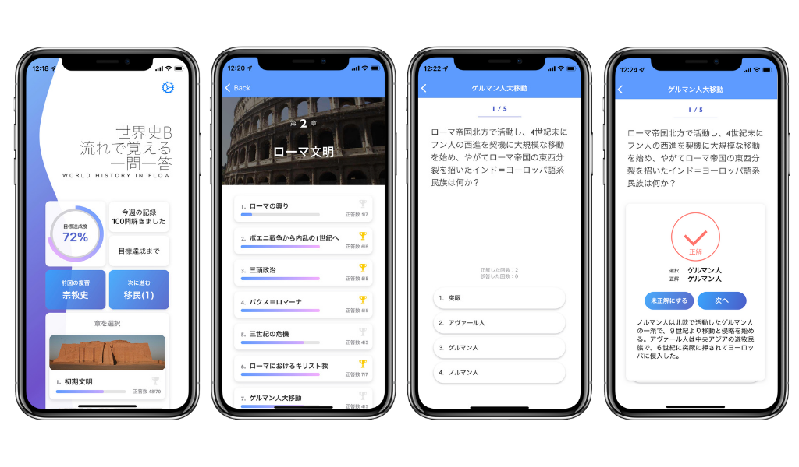

iOSアプリ
世界史 流れで覚える一問一答

Introduction
〈世界史 流れで覚える一問一答〉は本格的な世界史学習体験を目指して開発中のアプリです。
豊富な問題、解説で受験に役立ち、教養も深める知識を提供します。
豊富な問題、解説で受験に役立ち、教養も深める知識を提供します。
Sample

Privacy policy
Masatomo Fukuda built the "世界史 流れで覚える一問一答" app as a Free app. This SERVICE is provided by Masatomo Fukuda at no cost and is intended for use as is.
This page is used to inform visitors regarding my policies with the collection, use, and disclosure of Personal Information if anyone decided to use my Service.
If you choose to use my Service, then you agree to the collection and use of information in relation to this policy. The Personal Information that I collect is used for providing and improving the Service. I will not use or share your information with anyone except as described in this Privacy Policy.
The terms used in this Privacy Policy have the same meanings as in our Terms and Conditions, which are accessible at 世界史 流れで覚える一問一答 unless otherwise defined in this Privacy Policy.
Information Collection and Use
For a better experience, while using our Service, I may require you to provide us with certain personally identifiable information, including but not limited to MasatomoFukuda. The information that I request will be retained on your device and is not collected by me in any way.
The app does use third-party services that may collect information used to identify you.
Link to the privacy policy of third-party service providers used by the app
- AdMob
- Google Analytics for Firebase
- Log Data
I want to inform you that whenever you use my Service, in a case of an error in the app I collect data and information (through third-party products) on your phone called Log Data. This Log Data may include information such as your device Internet Protocol (“IP”) address, device name, operating system version, the configuration of the app when utilizing my Service, the time and date of your use of the Service, and other statistics.
Service Providers
I may employ third-party companies and individuals due to the following reasons:
- To facilitate our Service;
- To provide the Service on our behalf;
- To perform Service-related services; or
- To assist us in analyzing how our Service is used.
Security
I value your trust in providing us your Personal Information, thus we are striving to use commercially acceptable means of protecting it. But remember that no method of transmission over the internet, or method of electronic storage is 100% secure and reliable, and I cannot guarantee its absolute security.
Links to Other Sites
This Service may contain links to other sites. If you click on a third-party link, you will be directed to that site. Note that these external sites are not operated by me. Therefore, I strongly advise you to review the Privacy Policy of these websites. I have no control over and assume no responsibility for the content, privacy policies, or practices of any third-party sites or services.
Changes to This Privacy Policy
I may update our Privacy Policy from time to time. Thus, you are advised to review this page periodically for any changes. I will notify you of any changes by posting the new Privacy Policy on this page.
This policy is effective as of 2022-03-21
Contact Us
If you have any questions or suggestions about my Privacy Policy, do not hesitate to contact me at sekaishinagare@gmail.com.
This privacy policy page was created at privacypolicytemplate.net and modified/generated by App Privacy Policy Generator